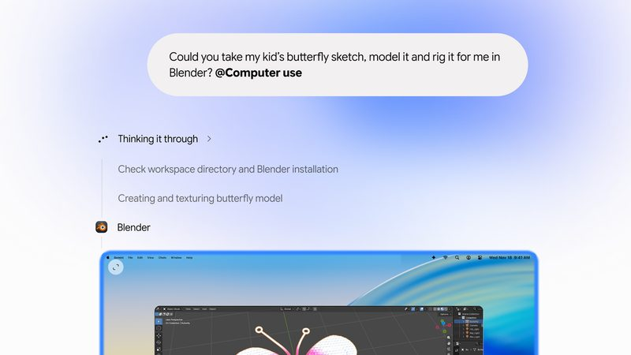
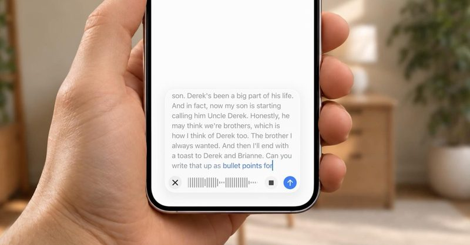
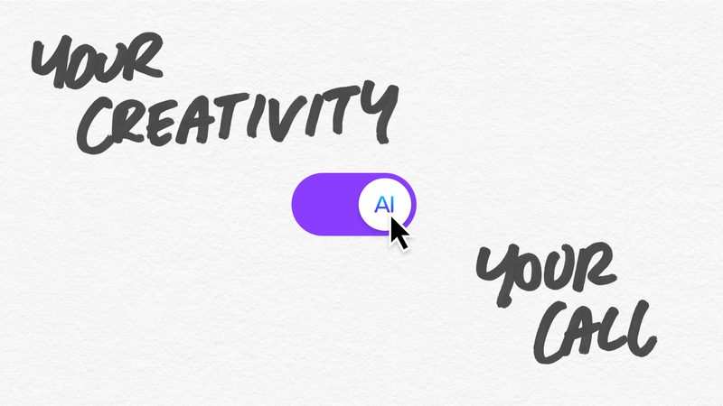
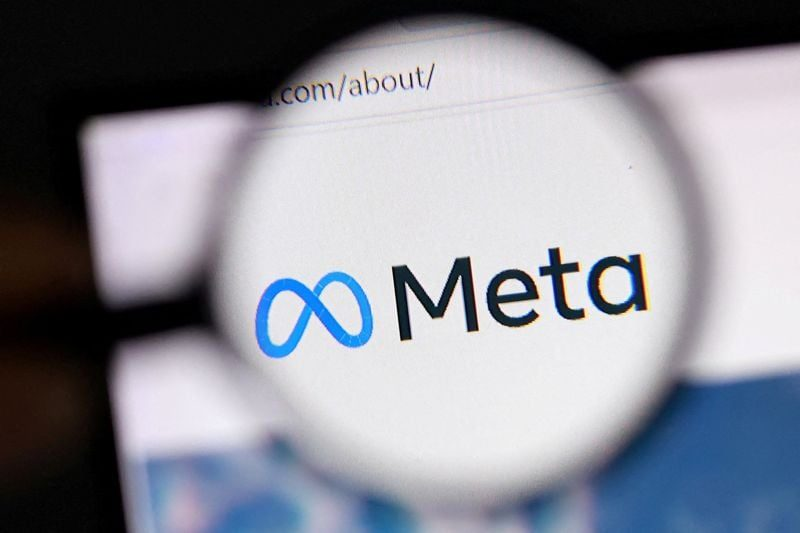
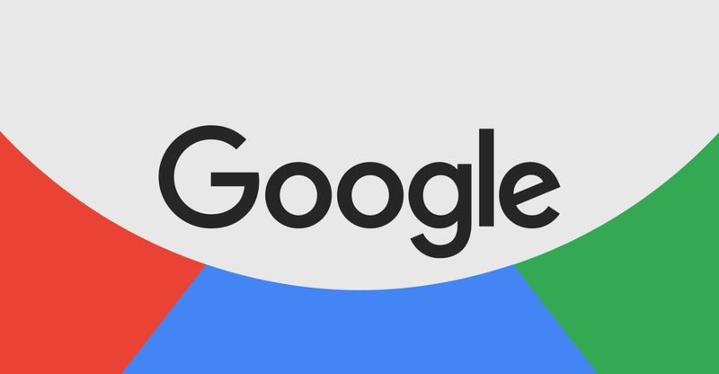
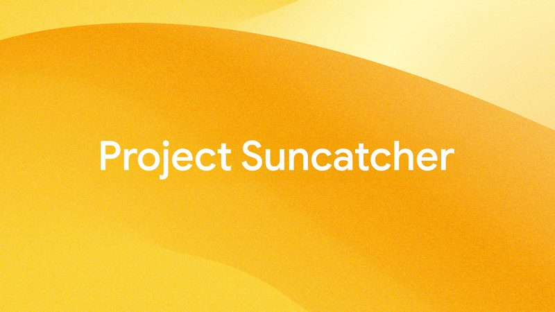

今日頭條
Anthropic 在 Nasdaq 掛牌交易 PLUS：Gemini Mac 版可以代你操作電腦
本期重點：Anthropic 以每股 83 美元完成定價，11 月 19 日在 Nasdaq 掛牌，開盤後股價比承銷價高約 33%；Google 讓 Mac 版 Gemini 可以代你點選、打字完成重複工作。另有 ChatGPT 即時聽寫上線、Canva 推出生成式 AI 開關、Reuters 揭露 Meta 的 Muse 代理疑似讀取私人訊息、Google 首頁加入 AI 對話側欄，以及 Google 與 Blue Origin 合作把 AI 運算送上太空的計畫。
📋 2026/11/20（五） 共 7 則 Anthropic 在 Nasdaq 掛牌，開盤比承銷價高約 33% Gemini Mac 版可以代你點選、打字，處理重複工作 ChatGPT 即時聽寫上線，取消 10 分鐘錄音上限 Canva 推出生成式 AI 開關，免費版也能用 Reuters：Meta 的 Muse 代理疑似讀取私人訊息、混入他人資料 Google 首頁加入側欄，可以接續 AI 搜尋對話 Google 與 Blue Origin 合作，2029 年把 AI 運算衛星送上太空 圖：TechCrunch／Getty Images 資金 #1 Anthropic 在 Nasdaq 掛牌，開盤比承銷價高約 33% Anthropic 於 11 月 18 日（美國時間）公告首次公開發行定價為每股 83 美元，共 9.8 億股，高於原先預估的 70 到 78 美元區間，股票代號 ANT。11 月 19 日在 Nasdaq 開始交易，TechCrunch 報導開盤初期每股約 111.50 美元，比承銷價高約 33%，募資金額超過 810 億美元。
💡 跟你有什麼關係： Anthropic 上市後的股價表現，可能成為 OpenAI 等尚未上市 AI 公司估值與上市計畫的參考；持有美股科技 ETF 的人，之後也可能間接受影響。
⚠️ 本則為 11 月 15 日報導認購情況的後續進展。開盤價與募資金額引自 TechCrunch，股價會持續波動；發行預計 11 月 20 日完成交割。投資前請自行評估風險。
📰 原始來源：Anthropic 官方（2026-11-18），開盤數字引 TechCrunch（2026-11-19） ↗ 
圖：Google 工具 #2 Gemini Mac 版可以代你點選、打字，處理重複工作 Google 於 11 月 19 日宣布，Mac 版 Gemini App 加入「電腦操作」功能，用文字描述工作流程後，Gemini 會在獨立的背景視窗裡點選選單、輸入資料、填寫表單，跨本機檔案、桌面 App 與網頁完成多步驟任務。使用者可以選擇允許哪些 App、即時看到每一步，隨時暫停，關鍵動作要先經過同意。
💡 跟你有什麼關係： 像是把一批檔案整理後填進表單、在幾個網站之間複製資料這類要點幾十下的工作，可以交給 Gemini 在背景做，你的游標和螢幕不會被占用。
⚠️ 目前只在美國以英文推出，需要 Apple 晶片 Mac 與 macOS Sequoia 15.0 以上，限 18 歲以上個人帳號的 Google AI Plus、Pro、Ultra 付費用戶。讓 AI 操作電腦前，建議只開放必要的 App。
📰 原始來源：Google 官方部落格（2026-11-19） ↗ 
圖：OpenAI（經 The Verge） 新上線 #3 ChatGPT 即時聽寫上線，取消 10 分鐘錄音上限 OpenAI 在 11 月 18 日的 ChatGPT 更新紀錄中宣布 Live Dictation：用語音輸入時，文字會邊說邊出現，不必等錄完才轉寫，點一下聲波圖示就能顯示或隱藏逐字稿。同時取消原本 10 分鐘的錄音上限，所有方案都可使用，陸續在 iOS、Android、網頁與桌面版推出。
💡 跟你有什麼關係： 習慣用講的來問問題或整理想法的人，可以一次口述較長的內容，例如會議重點或文章草稿，邊說邊看轉寫有沒有錯，說完再修改送出。
⚠️ 採逐步推出，有些帳號可能還沒看到。官方未說明中文辨識準確度是否有變化。
📰 原始來源：OpenAI Help Center 更新紀錄（2026-11-18） ↗ 
圖：Canva 工具 #4 Canva 推出生成式 AI 開關，免費版也能用 Canva 於 11 月 19 日推出兩項 AI 控制設定：一個開關可以關閉整個 Canva 的生成式 AI 功能，關閉後這些功能會被隱藏；另一個選項可以減少素材庫裡出現的 AI 生成內容。Canva Free 與 Canva Pro 都可以免費使用，隨時可以再打開。
💡 跟你有什麼關係： 不想被 AI 功能干擾、或擔心作品被標成 AI 生成的人，可以自己決定要不要用。去背、Magic Grab 這類只編輯既有內容的工具關掉開關後仍可使用，官方表示這些工具不會在檔案加上 AI 生成標記。
⚠️ 減少 AI 內容的選項是「降低」出現機率，官方沒有說會完全排除。官方頁未標示發布時間，時間以 The Verge 與 Engadget 同步報導為準。
📰 原始來源：Canva 官方新聞室（2026-11-19） ↗ 
圖：Reuters／Dado Ruvic（示意圖） 新聞 #5 Reuters：Meta 的 Muse 代理疑似讀取私人訊息、混入他人資料 Reuters 於 11 月 18 日報導，檢視超過 24 則 Meta 內部貼文發現，員工回報 AI 代理 Muse 傳來不屬於自己的銀行餘額、沒下過的訂單，還會提醒回覆 Signal 加密訊息。Reuters 與 Signal、AI Now Institute 測試發現，Muse 在 Android 上透過通知權限、在 Mac 上透過輔助使用與截圖權限讀到 Signal 訊息內容，iPhone 上則被擋下。
💡 跟你有什麼關係： 幫你處理事情的 AI 代理通常要很大的手機或電腦權限，安裝時順手按下的「允許通知存取」，可能讓它讀到其他 App 的訊息。使用這類 App 前，值得回頭檢查一下給了哪些權限。
⚠️ Meta 表示這些是個別事件，許多疑似帳號錯置的訊息是 AI 捏造（幻覺），已處理；Reuters 無法確認銀行餘額是真實他人資料還是捏造。Muse 目前未在台灣推出。
📰 原始來源：Reuters，經 Investing.com（2026-11-18） ↗ 
圖：The Verge 新上線 #6 Google 首頁加入側欄，可以接續 AI 搜尋對話 Google 搜尋產品副總裁 Robby Stein 於 11 月 19 日在 X 上展示新首頁：左側新增可收合的側欄，列出用 AI Mode 搜尋過的紀錄，可以接續對話、開新對話、搜尋過去的對話，或連結 Gemini Notebook。The Verge 報導，新首頁正在全球桌面版推出。
💡 跟你有什麼關係： 常用 Google AI Mode 查資料的人，不用再重打問題，打開首頁側欄就能回到前一次的搜尋脈絡繼續問。
⚠️ 資訊來自 Stein 的 X 貼文與 The Verge 報導，Google 未另發部落格公告；目前只限桌面版，各地推出進度可能不同。
📰 原始來源：The Verge（2026-11-19），引 Google 副總裁 Robby Stein 貼文 ↗ 
圖：Google 研究 #7 Google 與 Blue Origin 合作，2029 年把 AI 運算衛星送上太空 Google 於 11 月 19 日宣布，與 Blue Origin 合作進行 Project Suncatcher 的第一次重型發射，目標在 2029 年第一季用 New Glenn 火箭，把每顆約等於一個資料中心機櫃運算量的衛星送進太陽同步軌道。Suncatcher 是 Google 的長期登月計畫，想利用太空中充足的太陽能擴大 AI 運算。
💡 跟你有什麼關係： AI 資料中心越蓋越多，用電與用水已成為各地爭議；把部分運算移到太空是大公司正在押注的解方之一，未來可能影響 AI 服務的成本與能源來源。
⚠️ 這是長期研究計畫，發射預定在 2029 年，技術與成本是否可行仍待驗證。
📰 原始來源：Google 官方部落格（2026-11-19） ↗ ✅ 2026/11/20（五） 可以做： 如果你用 Canva，可以到「Profile > Settings > Permissions」找到生成式 AI 開關，依自己需要決定開或關；不想在素材庫看到太多 AI 圖，也可以在「AI personalization」調整。
🗂️ 過去 14 天